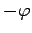
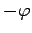
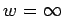
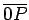
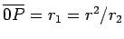

Inhalt Index DeskTop Bronstein

 Funktionentheorie Funktionen einer komplexen Veränderlichen Konforme Abbildung Einfachste konforme Abbildungen
Funktionentheorie Funktionen einer komplexen Veränderlichen Konforme Abbildung Einfachste konforme Abbildungen


Bei der Inversion genannten konformen Abbildung
geht ein Punkt z der z-Ebene mit dem Radius r und dem Argument  in einen Punkt w der w-Ebene mit dem Radius 1/r und dem Argument  über. Die orthogonalen Netze der Transformation zeigt die Abbildung.
in einen Punkt w der w-Ebene mit dem Radius 1/r und dem Argument  über. Die orthogonalen Netze der Transformation zeigt die Abbildung.
Die Transformation(14.12)beschreibt eine Spiegelung am Einheitskreis und eine Spiegelung an der reellen Achse (s. die folgende Abbildung).
Kreise gehen in Kreise über, wobei Geraden als Grenzfälle zu den Kreisen gerechnet werden (Radius ). Wegen |w|=1/|z| geht der Einheitskreis der z-Ebene in den Einheitskreis der w-Ebene über. Alle Punkte im Innern des Einheitskreises |z|=1 werden zu Punkten des Außengebietes von |w|=1 und umgekehrt (siehe folgende Abbildung).
Der Punkt z=0 geht in  über. Die Punkte z=1 und z=-1 sind Fixpunkte.
Hinweis: Allgemein wird eine geomtrische Transformation als Spiegelung an einem Kreis mit dem Radius r bezeichnet, wenn ein Punkt P2 mit dem Radius r2 im Innern des Kreises mit dem Radius r auf einen Punkt P1 auf der Verlängerung des gleichen Radiusvektors  außerhalb des Kreises abgebildet wird und für den Radius  gilt (siehe obige Abbildung). Punkte, die im Innern des Kreises liegen, werden zu äußeren Punkten und umgekehrt .